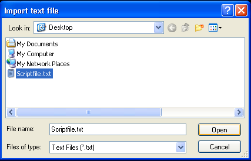
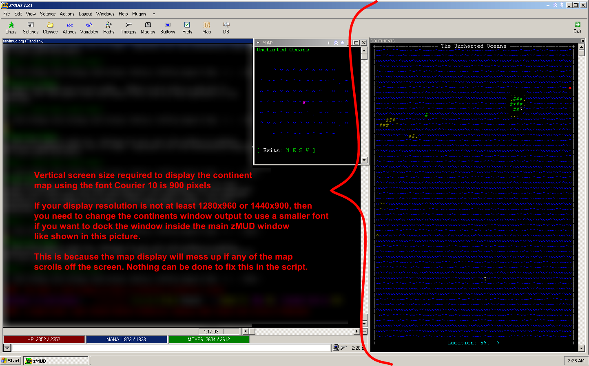

updatecontinent - Updates the stored cache of the map for the current continent. Use whenever new areas are added or old areas are removed.
bigmaphelp - Shows the info screen with command list.
New in the September 12, 2008 update:
Coordinates recently became available inside areas. This allows the map to stay up when you go into a zone. Have given previouscontinentnumber a default value of -1 to correct a new issue at login.
New in the August 10, 2008 update:
Coordinates recently became available in Vidblain. The script now knows how tall the Vidblain bigmap is so that it can display properly.
New in the July 20, 2008 update:
Just performance enhancements. Speedwalks and changing continents should happen more smoothly now.
New in the July 13, 2008 update:
There was apparently an issue related to color codes being shown differently under VT100 and ANSI color settings. This should be fixed.
IF YOU DO NOT INSTALL THIS SCRIPT AS DESCRIBED BELOW YOU WILL BE SORRY.
------------ BEGIN INSTRUCTIONS ------------
This script installs a class named "SelfUpdatingBigmap" which contains a disabled class called "continentupdateinternals"
and aliases "bigmaphelp", "drawmap", "updatecontinent", and "vidblainmap".
It will also create several text files in your zMUD Aardwolf profile directory named after the continents.
If any of your scripts conflict with these names, they must be removed first or everything will break.
To install the script go to the Actions menu in zMUD and choose "Execute script..."
Then select the text file containing the script, in this case Bigmap.txt, and click Open

When the installer is done it will ask you to save a file called CONTINENTS.MUD.
Click SAVE.
IMPORTANT INFORMATION IF YOU PLAN TO DOCK THE CONTINENTS WINDOW:

IMPORTANT INFORMATION AFTER YOU INSTALL THE SCRIPT:
After you install the script, now you need to go and visit each continent in order to let the script update the internal cache. The script works using stored copies of the bigmaps. If you don't give it a chance to store copies, then it can't do its magic.
To visit a continent from Aylor recall type "runto <continent_keyword>", like so:
runto abend
runto alagh
runto southern
runto uncharted
runto mesolar
runto vidblain
runto gelidus
Or you could just walk to each continent.
When you visit a continent for the first time or when you manually initiate a continent storage update (with the updatecontinent command), you will see a message like:
Updated bigmap for "The Continent of Mesolar" or whatever the name of the continent is.
That's it. Below is a video showing what the script does.
Note: Speedwalk times are completely unaffected by activation of this script, though you will see yourself running.